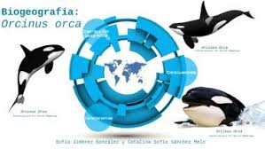
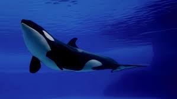
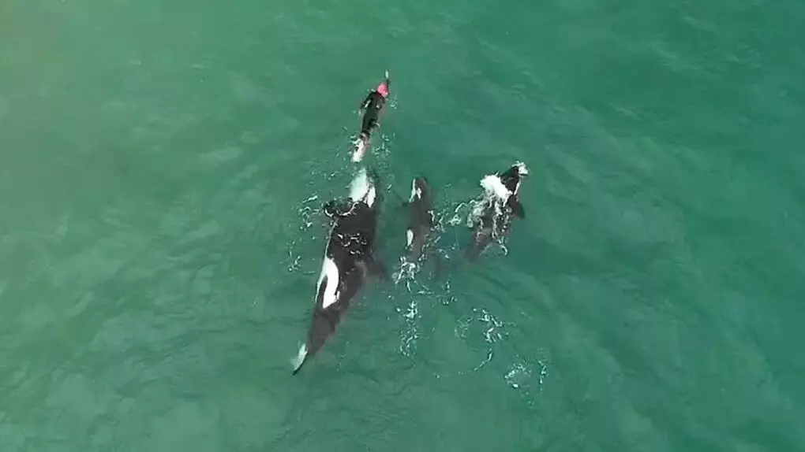

Las orcas son cetáceos que se distribuyen ampliamente recorriendo cada océano de nuestro planeta. Tienen la asombrosa capacidad corporal para soportar temperaturas marinas muy frías y también para formar parte de los ecosistemas tropicales. Los estudios han comprobado que después de los humanos, son los mamíferos con mayor distribución global.
El número más abundante de ejemplares se concentra en aguas con bajos grados centígrados, esto incluye a la Antártida, el Atlántico Norte y Noroeste del océano Pacífico y esto se debe principalmente a que en esas zonas el alimento se da en mayor cantidad.
|
Son especies que no se limitan por la salinidad, la temperatura o la profundidad del mar, logrando permanecer tanto en aguas profundas como en áreas muy cercanas a las costas, donde apenas existen escasos metros de agua. Seguramente habrás visto en algunos vídeos la increíble habilidad que tienen para llegar hasta la orilla, capturar leones marinos y regresar a su hábitat aún con su impresionante tamaño y peso. Esto es algo que no todos los cetáceos pueden lograr ya que la mayoría de ellos corren el riesgo de quedar varados.



Pueden adentrarse en casi cualquier hábitat marino y algunos ejemplares se han visto en canales costeros y desembocaduras de ríos. Debido a su extensa ubicación geográfica, comparten territorio con múltiples especies marinas, que van desde focas, pingüinos y leones marinos, hasta tortugas marinas, tiburones y rayas. |
Estudios científicos han podido afirmar la presencia de varias poblaciones de orcas, e incluso se ha llegado a hablar de subespecies, cuyos hábitos alimenticios, comportamiento, estructuras sociales, características físicas y hábitat, difieren notablemente entre zonas. Se identificaron cinco formas de orcas antárticas y tres formas o ecotipos de orcas del Pacífico que hasta la fecha se han reconocido: los residentes, los transeúntes y los lejanos a la costa. Los residentes y transeúntes pueden estar formados por varias poblaciones internas.